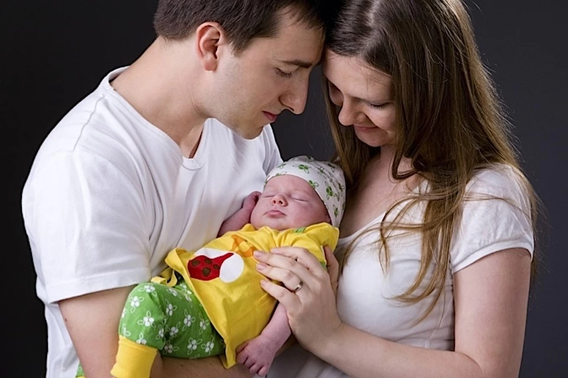

Чому люди вирішують усиновити дитину? Причини у всіх різні: хтось не може мати своїх дітей, хтось розуміє свою готовність допомогти приймака вирости. У будь-якому випадку, на таке зважуються люди з добрим серцем.
Однак, навіть незважаючи на те, що сьогодні усиновлення стає все більш популярним, а прийомні діти живуть в сім'ях багатьох знаменитостей, цей процес оточений масою стереотипів. Багато хто боїться складнощів на шляху до зустрічі з новим членом сім'ї, хтось не знає, як приховати факт усиновлення, хтось боїться, що у дитини проявиться «погана спадковість», адже часто про біологічних батьків нічого не відомо. Деякі стикаються з осудом друзів і близьких. І все ж так хочеться розвіяти страхи, так хочеться переконати тих, хто готовий забрати малюка, що потребує мамі і татові, переконати в тому, що дитина - це завжди дитина, і це величезне щастя!
Ми зібрали 10 важливих речей, про які повинні знати всі прийомні батьки. Попереджений значить озброєний. Озброєний знаннями, які допоможуть з усім впоратися!
1. Перш за все, необхідно зрозуміти, що усиновлення - є незворотнім. Дитину не можна «взяти пограти», а потім повернути, якщо не сподобається. Якщо ви повертаєте дитини в дитячий будинок, це ламає йому життя. Багато діток в дитячих будинках згадують як найстрашніший кошмар той день, коли начебто батьки відмовилися від них. Знову відмовилися! Ви повинні серйозно обміркувати свій крок (ймовірно, навіть протягом декількох років), а не піддаватися хвилинному пориву, обговорити рішення з усіма членами сім'ї (особливо якщо у вас вже є діти) і зважити подумки всі аргументи «за» і «проти».
2. Будьте готові до того, що процедура оформлення - це досить довгий і складний процес. Однак все держструктури готові піти назустріч майбутнім батькам і всіляко сприяють тому, щоб документи були зібрані і підписані якнайшвидше.
3. Багато майбутні батьки побоюються того, що дитина з дитячого будинку виявиться хворим або з «поганою спадковістю». Однак куди більшою проблемою є його емоційна адаптація. Як правило, брак уваги і турботи, з яким малюк стикається в дитячому будинку, в результаті можуть призвести до складнощів у спілкуванні з дорослими і однолітками і навіть до затримки психічного розвитку. Так що слід ставитися до нього з увагою, участю і турботою, але при цьому залишати певне особистий простір. Будьте готові звертатися до психологів, читати літературу, багато виховні моменти проходити чітко і злагоджено, як по інструкції. І пам'ятайте - дитині важливо, щоб про нього піклувалися, щоб його любили, але не балували і виконували його капризи. Так ви виростите маніпулятора. Ваш усиновлена дитина - це просто дитина, і головне, що йому потрібно - це впевнений дорослий. Іноді ніжний, іноді суворий, але впевнений і відповідальний. Не бійтеся бути строгим з малюком, який і так натерпівся. Строгість - це кордону, які будь-якій дитині потрібно відчувати.
4. Будьте готові розділяти обов'язки по догляду за дитиною. По-перше, слід показати йому, що росте він у повній сім'ї із здоровими відносинами між батьками. По-друге, він повинен довіряти обом і цінувати маму і тата однаково.
5. Не намагайтеся усиновленням «склеїти» свій шлюб. Якщо відносини дали тріщину, дитина не зможе все виправити і поліпшити. Багато пари вирішуються на народження дитини, щоб «склеїти відносини». Усиновлення - не той випадок. Пам'ятайте, що ви маємо привести дитину в найкомфортніші умови, в будинок зі здоровим сімейним кліматом, де він не буде відчувати дискомфорт, спостерігати сварки і відчувати себе зайвим.
6. Перш ніж усиновити дитину, познайомтеся з ним, проведіть з ним час, відвідайте психолога, щоб перевірити вашу сумісність. Не забувайте про тренінги для майбутніх прийомних батьків, на яких фахівці пояснять вам особливості поведінки (а, отже, і виховання) прийомних дітей.
7. Якщо ви усиновили дитину, вже вийшов з дитячого віку, не чекайте від нього особливих успіхів і досягнень з першого дня: нерідко навчання дається не домашня дітям складніше, ніж одноліткам зі звичайних сімей. Однак не варто забувати, що дітям подобається займатися творчістю - співати, малювати, вчитися грі на музичних інструментах. Це допоможе захопити дитину і прищепити інтерес до наполегливої праці і прагнення до нових знань.
8. Не чекайте від дитини проявів любові і відданості прямо з того моменту, як ви привезли його додому. Поки ви для нього - чужа людина, дайте час звикнути до вас, доведіть йому, що ви стали його справжніми батьками. Дитині необхідно звикнути до нової обстановки - адаптація, як правило, займає близько року. Крім того, прийомні діти-підлітки і зовсім можуть почати перевіряти вас на міцність, щоб зрозуміти ваше справжнє ставлення до них. Так що будьте готові.
9. Уважно обирайте педагогів, які працюватимуть з вашою дитиною (класних керівників, вчителів, шкільних психологів, репетиторів, викладачів в музичній школі, спортивних тренерів). Важливо, щоб педагог не "пресував» дитини, що не вів себе по відношенню до нього агресивно. Інакше це може призвести до того, що дитина замкнеться (думатиме, що все через те, що її прийняли), почне соромитися або буде постійно заляканий - подібний стан негативним чином позначиться як на успішності, так і на психічному стані школяра. Звичайно, з подібними вчителями можуть зіткнутися і рідні діти, однак захистити від недбайливих педагогів прийомних дітей особливо важливо, тому що їх психічний стан і самооцінка вже були підірвані сімейною історією і дитячим будинком.
10. Не думайте, що у вас попереду тільки труднощі. Усвідомте, справа, яку ви робите, не відразу стане справою вдячним. Зрозумійте, що труднощі, які зустрічаються на вашому шляху - погані оцінки, перехідний вік, складний характер, капризи - цілком природні. З ними стикаються всі батьки, і рідні - нітрохи не менше. Але ваші старання обов'язково будуть винагороджені, адже діти стануть вашими рідними людьми, даруватимуть вам свою любов і довіру, а їх успіхи і посмішки стануть для вас найкращою нагородою.